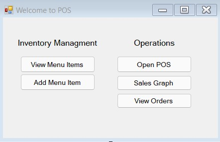

Here is the main menu for the POS system. You fill find five buttons that fall under two categories.
1. Inventory Managment
2. Operations
Inventory managment will include methods to add, update, and remove items from the menu. Where as operations will allow the user to create an order, view total sales of an item, and manage orders. The user would simply click on the button labeled with the task the user is looking to complete. Closing this main window will close the program.